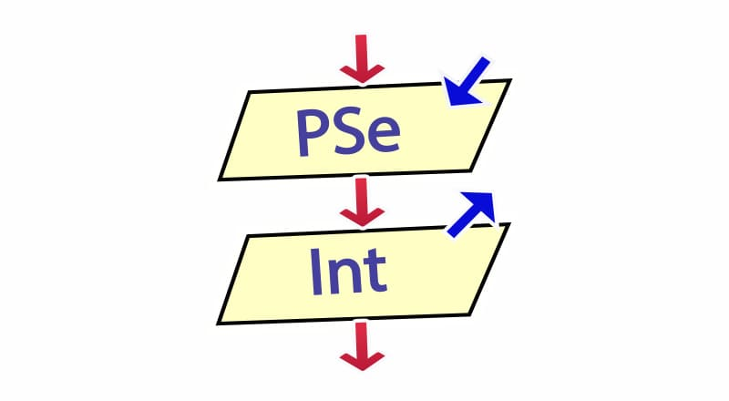

Si, curso Argentina programa 4.0 desarrolador JAVA.
Empezamos viendo logica en seudocodigo con PseInt, JAVA y todas sus caracteristicas del POO, GUI. Diagramas de flujo, UML y relacionales, ademas SQL, GitHub Desktop, y estamos viendo JDBC con el cual terminariamos.
Seguimos cursando pero ya estamos terminando y ensamblando todo. Armamos varios proyectos en equipos pero todavia nada propiamente mio y con todas las tecnologias juntas.
